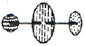
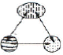
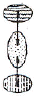
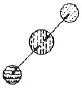
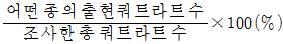
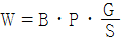
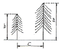
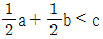
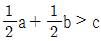
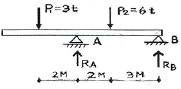

조경산업기사 (2005-09-04 기출문제)
1과목: 조경계획 및 설계
1. 용도(用途)지역의 구성배치와 동선으로 옳은 것은?




(정답률: 74%)

2. 아파트 조경계획의 진행과정이 가장 적합하게 연결된 것은?
- 적지선정 → 단지분석 → 시설배치와 식재계획 → 구획과 토지이용계획 → 실시설계
- 단지분석 → 적지선정 → 시설배치와 식재계획 →구획과 토지이용계획 → 실시설계
- 적지선정 → 단지분석 → 구획과 토지이용계획 → 시설배치와 식재계획 → 실시설계
- 단지분석 → 적지선정 → 구획과 토지이용계획 → 시설배치와 식재계획 → 실시설계
(정답률: 64%)
3. 레드번의 녹지계획에 관한 설명중 옳지 않은 것은?
- 주거구(住居區)는 단지 총면적의 15%이상을 녹지로 조성한다.
- 주거구는 수퍼 블록으로 하고 통과 교통을 허용하지 않는다.
- 도로는 다목적 이용을 배제하고 목적별로 특정한 도로를 설치한다.
- 보행자 도로와 자동차 도로는 완전히 분리시킨다.
(정답률: 47%)
4. Lan Mcharg는 환경계획에서 생태적 결정론을 주장하였다. 이 생태적 결정론이란 무엇을 말하는가?
- 물리적인 형태가 생태를 지배하고 물리적인 것이 생태를 결정한다.
- 생태적 제현상들이 우리들이 지각하는 물리적 형태로 표현되며 이 제현상들이 형태를 지배한다.
- 생태계와 순환법칙으로 에너지의 순환을 생태적으로 설명한다.
- 엔트로피, 즉 에너지의 감소를 생태적으로 결정한다.
(정답률: 59%)
5. 토지이용계획은 토지의 가장 적절하고 효율적인 이용이라고 정의하고, 조경계획은 바로 이 최적이용을 달성하는 방법론이라고 말한 사람은?
- B. Hackett
- S. Gold
- D. Lovejoy
- M. Laurie
(정답률: 50%)
6. 전통의식을 고양시키거나 전승문화의 계승을 위하여 주로 조경 대상이 되는 공간상의 문화재는?
- 무형문화재
- 명승지
- 사적지
- 천연기념물
(정답률: 62%)
7. 동종동형(同種同形)의 가로수를 동일간격으로 열식(列植)하면 통일성을 얻게 된다. 이를 형태지각을 위한 ＜조직의 원리＞로 설명하면 아래의 법칙들이 적용된다고 할수 있는데, 이 가운데 가장 관련이 적은 것은?
- 근접의 법칙
- 유사의 법칙
- 연속의 법칙
- 완결의 법칙
(정답률: 53%)
8. 휴게시설의 기능에 속하지 않는 사항은?
- 프라이버시
- 분위기
- 체감온도
- 협동
(정답률: 60%)
9. 식생조사방법중 빈도는 군락내의 종의 분포의 일양석 및 이것에 기인되는 중간의 양적관계를 알기 위하여 측정하는 것이다. 다음중 빈도를 구하는 식은?
- 어떤 종이 출현한 쿼트라트 수/어떤 종의 총 개체수
- 조사한 총 쿼트라트 수/어떤 종의 총 개체수
- 어떤 종의 총 개체수/조사한 총 넓이

(정답률: 66%)
10. 연못의 계획과 관계되는 내용 중 잘못된 것은?
- 주변의 경사가 급할 때 연못은 커보인다.
- 연못의 가장자리는 지각과 조망에 영향을 주는 공간적인 테두리 역할을 한다.
- 주변보다 높은 곳에 위치할 때 불안한 긴장감을 갖게 한다.
- 연못의 형태는 자유형이나 곡선형이 보기에 좋다.
(정답률: 72%)
11. 도시의 팽창 및 확산을 억제하는데 가장 효과적인 녹지 계통은?
- 환상형(環狀型)
- 방사형(放射型)
- 위성식(衛星式)
- 점재형(點在型)
(정답률: 60%)
12. 먼셀 표색계의 3속성 표기로 맞는 것은? (단, H:색상, V:명도, C:채도)
- HV/C
- CH/V
- CV/H
- V/CH
(정답률: 87%)
13. 공간의 한정요소 중에서 천정면(天井面)의 가장 큰 역할은?
- 공간의 수식요소
- 공간의 개방기능
- 공간의 분위기 조성
- 공간의 폐쇄기능
(정답률: 45%)
14. Litton은 산림경관분석방법으로 4가지의 우세요소를 제시하였다. 경관의 우세요소가 아닌 것은?
- 질감(Texture)
- 규모(Scale)
- 형태(Form)
- 색채(Color)
(정답률: 61%)
15. 포장된 경사로(ramp)의 계획에 대한 내용중 잘못된 것은?
- 휠체어 사용자가 통행할수 있는 경사로의 유효폭은 120cm 이상으로 한다.
- 주어진 표고의 변화를 오르는데 비교적 좁은 수평면적이 요구된다.
- 일반적으로 장애인등의 통행이 가능한 경사로의 종단 기울기는 1/18이하로 한다.
- 바닥은 미끄럽지 않은 재료를 사용해야 한다.
(정답률: 65%)
16. 도시계획도에서 노랑색으로 표현된 지역은 어떠한 지역으로 식별하여야 하는가?
- 상업지역
- 주거지역
- 공업지역
- 녹지지역
(정답률: 75%)
17. 공원묘지의 계획 및 설계에 대한 사항중 적합하지 않은 것은?
- 장제장(葬祭場)은 영결(永訣)식을 올리기 위한 장소로 진입로에서 먼쪽인 묘역 가까이 설치한다.
- 공원묘지의 배치는 녹지계통의 일환으로서 배려해야 한다.
- 일반 교통노선이 묘역 내를 통과하지 않도록 한다.
- 분묘 등급에 현저한 차를 두지 않도록 조성해야 한다.
(정답률: 72%)
18. 생태도시 계획중 친환경적 공원녹지 네트워크의 구성요소가 아닌 것은?
- 랜드마크(Landmark)
- 거점(Spot)
- 핵(Core)
- 생태적 회람(Eco-Corridor)
(정답률: 64%)
19. 공원녹지의 수요분석중 양적수요에 있어 도시민이 일상생활에서 필요한 산소의 공급원으로서 요구되는 수림지면적을 산출하여 공원녹지의 수요를 결정하는 방식은?
- 기능배분 방식
- 생태학적 방식
- 인구기준 원단위 적용방식
- 생활권별 배분방식
(정답률: 50%)
20. 조경계획을 위한 경사도 분석과 관계가 먼 항목은?
- 경사도에 따라 이용행태가 달라질수 있다.
- 경사도는 등고선간의 수직거리를 수평거리로 나눈 백분율이다.
- 등고선간의 수직거리는 항상변화한다.
- 등고선의 간격이 넓을 경우 경사가 완만하다.
(정답률: 64%)
2과목: 조경식재
21. 같은 시기에 피는 꽃의 조합이 아닌 것은?
- 튜울립 - 팬지 - 은방울꽃
- 페튜니어 - 한련 - 백합
- 수선 - 샐비어 - 국화
- 꽃창포 - 금잔화 - 함박꽃
(정답률: 33%)
22. 잔디종자의 파종을 시행하고자 할 때 파종량을 정하는 공식은? (W : 1m2당 파종량, G : m2당 희망본수, S : 종자1g의 평균립수, P : 순도(%), B : 발아율)
- W = GS/PB
- W = G/SPB

- W = GㆍSㆍPㆍB
(정답률: 30%)
23. 다음중 내음성이 강한 순서대로 수종을 나열한 것은?
- 주목 ＞ 가문비나무 ＞ 잣나무
- 꽝꽝나무 ＞ 동백나무 ＞ 개비자나무
- 삼나무 ＞ 잣나무 ＞ 주목
- 잣나무 ＞ 왜금송 ＞ 비자나무
(정답률: 57%)
24. 시선유도식재에 관한 설명중 옳지 않은 것은?
- 곡선부의 안쪽에는 시거에 방해를 주므로 식수하지 않는다.
- 산형(crest)구간에서는 정상부에 교목을 심고 약간 내려간 곳에 낮은 나무를 심는다.
- 골짜기(sag)구간에서는 가장 낮은 부분을 피해서 식재하는 것이 좋다.
- 곡선부의 전면에는 관목을 배식한다.
(정답률: 60%)
25. 수관의 텍스쳐(texture)를 좌우하는 중요한 인자라고 볼수 없는 것은?
- 꽃의 색깔
- 꽃의 크기
- 잎의 크기
- 꽃의 착생밀도
(정답률: 53%)
26. 다음중 공장식재에 있어서 제약점을 고려하지 않아도 되는 것은?
- 공장부지의 건폐율이 높아 식재할수 있는 여유공간이 없는 공장이 많다.
- 공장부지가 저습지, 토질이 불량한 매입지등 수목의 생육조건이 불리한 곳에 위치하는 경우가 많다.
- 녹지의 이용빈도 및 이용시간이 자유로워 이용률이 상승되기 쉽다.
- 식재의 적지라 하더라도 배기, 매연, 약품해로 인해 식물이 피해를 입어 생장치 않는 경우가 있다.
(정답률: 87%)
27. 다음중 내한성이 없는 대나무의 이식 적기는?
- 3월부터 4월
- 5월부터 6월
- 7월부터 8월
- 10월부터 12월
(정답률: 29%)
28. 고속도로변에 식재된 조경수목의 활력이 점차 저하된다고 할 때 그 이유로 예상할수 있는 것을 열거한것중 옳지 않은 것은?
- 배수불량
- 배기가스에 의한 영향
- 양분의 결핍
- 과다한 광합성 작용
(정답률: 61%)
29. 다음 지주설치 요령중 틀린 사항은?
- 연계형은 교목 군식지에 적용한다.
- 당김줄형은 거목이나 경관적 가치가 특히 요구되는 것에 적용하고, 주간 결박지점의 높이는 수고의 1/2가 되도록 한다.
- 삼각지주는 도로변, 광장의 가로수등 포장지역에 식재하는 수고 1.2~4.5m의 수목에 적용하되, 크기에 따라 선택적으로 사용한다.
- 수고 1.2m미만의 수목은 필요시 단각형(單脚形)을 설치한다.
(정답률: 48%)
30. 두 그루의 수목을 서로 관련(關聯)되어 보이도록 식재하고자 할때의 관계식은?

- a + b ＜ c
- a + b ＞ c


(정답률: 37%)
31. 다음중 조경수의 잎의 노랑색 단풍에 작용하는 색소는?
- Anthocyan
- Carotinoid
- Tannin
- Catechol
(정답률: 63%)
32. 다음 수종중 생장속도가 가장 느린 수종은?
- 사철나무
- 비자나무
- 백합나무
- 능수버들
(정답률: 70%)
33. 이조시대에는 풍수도참설에 의하여 집안에 나무를 심을때에는 홍동백서(紅東白西)의 이론이 적용되었다. 다음중 이 이론에 맞게 배치된 것은?
- 동 - 내행(奈杏)
- 서 - 도유(挑柳)
- 남 - 매조(梅棗)
- 북 - 석류(石榴)
(정답률: 48%)
34. 건조에 견디는 힘이 강한 조경수만으로 구성된 것은?
- 소나무, 아카시아나무, 녹나무, 자작나무
- 곰솔, 대추나무, 동백나무, 아왜나무
- 위성류, 가이즈까향나무, 풍년화, 태산목
- 층층나무, 황철쭉, 해당화, 협죽도
(정답률: 53%)
35. 추수식물의 식재방법중 채식 및 이식방법으로 거리가 먼 것은?
- 파종의 경우 어린시기에는 다른 식물과의 경쟁에 약하다.
- 포기심기의 이식시에는 지하경의 블록보다 조금 크게 구멍을 파서 그속에 포기를 넣어 빈틈에 진흙을 채우고 주위를 발로 다진다.
- 지하경심기의 경우 갈대군락의 지하경을 파일으켜, 새싹을 붙인 상태로 10~15cm의 길이로 자른 것을 이식한다.
- 줄기심기의 경우 직경 2~3cm의 막대기를 흙속에 30cm깊이로 박아 구멍을 만들어, 그 속에 2~3개의 갈대싹을 넣고 구멍옆을 발로 밟아 흙을 압착시킨다.
(정답률: 48%)
36. 다음 수목중 잎보다 꽃이 먼저 피는(先花後欒)것이 아닌 것은?
- 미선나무, 산수유
- 일본목련, 함박꽃나무
- 개나리, 진달래
- 박태기나무, 생강나무
(정답률: 61%)
37. 알칼리성 토양에 잘 견디는 수종은?
- 상수리 나무
- 종비나무
- 조팝나무
- 사방오리나무
(정답률: 31%)
38. 붉은 열매가 오랫동안 달려있는 수종이 아닌 것은?
- 가막살나무
- 명자나무
- 남천
- 식나무
(정답률: 40%)
39. 수목을 식재한후 짚이나 풀등으로 뿌리 주위를 덮어준다. 이러한 뿌리 덮개(mulching)로 인한 효과라고 볼수 없는 것은?
- 토양중 수분의 증발 억제
- 토양 구조의 개선
- 잡초가 무성해지는 것을 방지
- 뿌리의 동해방지
(정답률: 77%)
40. 수목식재의 효과에 있어서 건축적 이용이 아닌 것은?
- 프라이버시 확보
- 차단 및 은폐
- 점진적 이해
- 교통조절
(정답률: 40%)
3과목: 조경시공
41. 바람의 속도압이 171kg/m2 되는 곳에 표준형 벽돌 1.0B로 담장을 설치하려 한다. 담장의 측지사이의 거리(L)와 담장의 폭(T)의 최대비가 13일 때 측지의 간격은 얼마인가?
- 2.28m
- 2.47m
- 2.52m
- 2.73m
(정답률: 44%)
42. 기성고 누계곡선의 일반적인 형태는?
- S자형
- T자형
- C자형
- V자형
(정답률: 74%)
43. 옹벽 설계시 고려할 안정조건에 관한 설명으로 맞지 않는 것은?
- 활동에 대한 저항력은 수평력의 2배 이상이어야 한다.
- 옹벽에 영향을 주는 토압은 경사진 경우에는 경사진 표면과 평행하게 하중이 옹벽 높이의 1/3지점에 작용한다.
- 옹벽이 지반을 누르는 힘보다 지지력이 커야 한다.
- 캔틸레버 옹벽은 5m내외로 설계해야 안정적이다.
(정답률: 32%)
44. 콘크리트 타설작업시 발생하는 블리딩(Bleeding)현상에 대해 가장 잘 설명한 것은?
- 시멘트 입자의 비율이 높아 점성이 증가하므로 타설작업에 지장을 초래하는 현상
- 굳지 않은 상태에서 시멘트 입자의 점섬에 의한 재료분리에 저항하는 성질
- 시멘트의 화학적 작용으로 인한 골재의 혼합 및 타설작업에 지장을 초래하는 현상
- 굳지 않은 상태에서 골재 및 시멘트 입자의 침강으로 물과 가벼운 입자가 분리하여 상승하는 현상
(정답률: 79%)
45. 다음중 일반적인 배수계통의 유형이 아닌 것은?
- 직각식
- 환상식
- 차집식
- 집중식
(정답률: 54%)
46. 공사종목의 단위수량의 표준단위중 옳지 않은 것은?
- 공사연장 : m
- 직공인부 : 인
- 떼 : 매
- 벽돌 : 개
(정답률: 43%)
47. 돌 쌓기의 시공에 관한 설명중 틀린 것은?
- 찰쌓기의 경우 물구멍의 지름은 3~6cm의 대나무 혹은 파이프를 콘크리트 뒷면까지 설치한다.
- 메쌓기의 높이는 5m이하로 하는 것이 좋다.
- 찰쌓기에서는 배수공을 2~3m2마다 1개씩 둔다.
- 돌쌓기에 사용되는 호박돌은 20cm정도의 것을 사용한다.
(정답률: 50%)
48. 나무의 길이가 5m이고, 말구지름이 20cm일 때 목재의 재적을 계산하면 얼마인가?
- 0.2m3
- 0.24m3
- 1.9m3
- 2.4m3
(정답률: 48%)
49. 다음 토취장 및 골재원에 관한 설명중 옳지 않은 것은?
- 설계설명서에 그 위치를 표시하여야 한다.
- 토취장은 품질과 양 및 거리를 감안하여 설계한다.
- 토취장은 가급적 공사현장 인근에 매입하여 사용한다.
- 토취장은 사용후 정지하고 사방공사를 하여야 한다.
(정답률: 27%)
50. 식물을 식재할수 있는 플랜터(식수대)의 설계 및 시공에 관한 설명중 옳지 않은 것은?
- 양호한 배수가 이뤄지도록 한다.
- 벽체의 방수는 플랜터의 외부에 해야 한다.
- 주위의 경관을 고려한 벽체 재료 및 색상을 선택한다.
- 뿌리분의 밑에는 자갈층을 반드시 두어야 한다.
(정답률: 56%)
51. 다음 도장재료에 대한 설명중 옳지 않은 것은?
- 수성페인트는 유기질도료에 비하여 내구성과 내수성이 좋다.
- 유성페인트는 수성페인트보다 늦게 마른다.
- 에나멜페인트는 유성페인트보다 도막이 두껍고 내구성이 있으며, 색채광택이 좋다.
- 일반적인 칠공법은 초벌, 재벌, 정벌의 3단계를 거친다.
(정답률: 56%)
52. 그림에서 점A의 반력(RA)은 얼마인가?

- 1.2t
- 3.0t
- 6.0t
- 7.8t
(정답률: 32%)
53. 다음 조명용어(照明用語)에 대한 단위로서 바르지 못한 것은?
- 광속(光速) : lm(루멘)
- 광도(光度) : cd(촉광)
- 조도(照度) : lux(룩스)
- 휘도(輝度) : W(와트)
(정답률: 48%)
54. 우리나라의 경우 원로나 광장의 지하수위는 지표로부터 최소 어느정도의 깊이로 유지하는 것이 동결방지 및 자연처리의 유연성 확보면에서 좋은가?
- 0.5~1.0m
- 1.5~2.0m
- 2.0~2.5m
- 3m정도
(정답률: 50%)
55. 다음 토질별 변화율 L값이 옳은 것은?
- 경암 : 1.20~1.40
- 모래 : 1.30~1.40
- 점토 : 1.50~`.60
- 모래질 흙 : 1.20~1.30
(정답률: 45%)
56. 시공계획에서 설계변경 조건으로 옳지 않은 것은?
- 공법, 현장여건의 변동 및 수량의 변경시
- 골재원과 부토용 토취장의 위치 및 운반거리 변경
- 해당 단위공정의 지연으로 공사기일 전체가 지연된 경우
- 물량내역서와 설계도면과의 현격한 차이가 발생한 경우
(정답률: 45%)
57. 다음 중 시멘트의 응결이 느린 경우는?
- 시멘트의 분말도가 큰 경우
- 온도가 높고, 습도가 낮을수록
- C3A 성분이 많을수록
- W/C 비가 많을수록
(정답률: 40%)
58. I.S.O 에 대한 설명으로 맞지 않는 것은?
- I.S.O는 국제표준화 기구를 말한다.
- I.S.O에서는 협의를 통해 제정된 국제 표준은 각국의 실정에 맞게 수정하거나 번역되어 국가표준으로 사용한다.
- I.S.O인증 제도는 일종의 품질관리 시스템이다.
- I.S.O 9000은 환경경영에 관한 내용이다.
(정답률: 45%)
59. 식물 생육을 위해 토양생성작용을 받은 솔럼(SOLUM)층으로 근계발달과 영양분을 제공할수 있는 층으로 표토복원에 쓰일 토양층이 아닌 것은?
- 유기물층
- 용탈층
- 집적층
- 모재층
(정답률: 74%)
60. KS에서 규격화하고 있는 내용이 아닌 것은?
- 재료의 형상
- 재료의 치수
- 재료의 생산법
- 재료의 구입법
(정답률: 81%)
4과목: 조경관리
61. 시설.점검.보수에 있어서 가장 염두해야 할 사항은?
- 안전성
- 편리성
- 상업성
- 내구성
(정답률: 70%)
62. 겨울철에 지표면 아래의 온도가 0℃ 이하로 되면 지표면이 계속 솟아올라 포장면이 갈라지게 된다. 이에 대한 방지방법중 적당하지 않은 것은?
- 배수 도랑을 설치하여 지하 수위를 저하시킨다.
- 주위의 지표면보다 되도록 낮은 곳에 포장면을 설치하도록 한다.
- 얼음이 어는 깊이까지 모래질흙으로 바꾸어 준다.
- 심할 경우 지표 가까운 부분에 단열재를 묻는다.
(정답률: 50%)
63. 조경수목의 유지관리를 위한 올바른 전정 방법이 아닌 것은?
- 수목의 지엽이 지나치게 무성한 경우 하계 전정으로 가지를 정리한다.
- 진달래나 철쭉, 목련류 등의 화목류는 낙화 직전에 춘계 전정을 하면 좋다.
- 나무를 이식하기 전에는 단근된 지하부와 균형을 위해 굵은 가지를 친다.
- 소나무류는 윤생지의 발생을 억제하기 위해 순꺽기를 봄철에 행한다.
(정답률: 55%)
64. 다음 마사토 포장의 보수에 대한 설명중 적당하지 않은 것은?
- 비가 온뒤 차량통행으로 생긴 요철부는 배수가 잘되는 모래, 풍화토로 채워 잘 다진다.
- 노면의 횡단경사를 8~10%로 유지하고 노면의 지표수가 고여 있을때는 신속히 배제한다.
- 표면수가 흙속으로 스며들지 않도록 하고, 필요시 명거, 암거 등 배수시설을 설치한다.
- 극히 배수불량 지역의 도로는 도로양측에 폭 1m, 깊이 1m의 측구를 설치하고 자갈, 호박돌 등의 재료로 치환한다.
(정답률: 39%)
65. 다음 중 관리하자에 의한 사고로 볼수 없는 항목은?
- 시설의 구조 자체의 결함에 의한 것
- 시설의 노후, 파손에 의한 것
- 의험장소에 대한 안전대책 미비에 의한 것
- 위험물 방치에 의한 것
(정답률: 53%)
66. 동해(冬害)를 입기 쉬운 조건들중 잘못된 것은?
- 상해는 맑은 밤에 많고, 흐린 날에는 적다.
- 건조한 토양보다 습한 토양에 발생하기 쉽다.
- 남면에서는 북면에서 보다 피해가 심하다.
- 성목(成木)보다 어린 나무에서 발생이 많다.
(정답률: 40%)
67. 시설물의 점검시 점검빈도가 가장 짧은 것은?
- 옥외 소화 설비의 소화전 누수 유무 점검
- 유희시설의 강재 용접등에 의한 이음 부분
- 교량, 옹벽, 울타리 및 암거
- 각종 케이블의 매설 상태
(정답률: 69%)
68. 다음 중 주요한 전반(傳搬)방법과 병원체의 연결이 바른 것은?
- 바람에 의한 전반 - 묘목의 입고병균
- 물에 의한 전반 - 잣나무 털녹병균
- 묘목에 의한 전반 - 밤나무 근두암종병균
- 토양에 의한 전반 - 향나무 적성병균
(정답률: 64%)
69. 활엽수의 지엽(枝葉)에 탄저병의 병반이 발생하여 보르도 액을 조제하여 살포하고자 한다. 다음중 8두식 배량(斗式倍量)보르도액은?
- 황산동 450g, 생석회 225g, 물 72L
- 황산동 450g, 생석회 450g, 물 108L
- 황산동 450g, 생석회 900g, 물 144L
- 황산동 450g, 생석회 1,350g, 물 144L
(정답률: 53%)
70. 다음 유희시설의 전반적인 유지관리에 대한 내용중 가장 거리가 먼 것은?
- 파손된 시설물은 즉시 보수하여 어린이가 이용할수 있도록 하며 그대로 장시간 방치해서는 안된다.
- 해안의 염분, 대기오염이 현저한 지역에서는 가급적 스테인리스 제품을 사용한다.
- 놀이터 내에 물이 고이는 곳이 없도록 모래면을 평탄하게 고른다.
- 바닥 모래는 바람에 날리지 않도록 수분이 충분히 유지되도록 한다.
(정답률: 60%)
71. 잔디밭의 통기작업(通氣作業)이라 볼수 없는 것은?
- 레이킹(raking)
- 톱 드레싱(top dressing)
- 코링(coring)
- 스파이킹(spiking)
(정답률: 70%)
72. 다음 잔디밭 관리에 따른 공정중 관계가 먼 것은?
- 통기(通氣)작업
- 밑깍기작업
- 시비
- 복토작업
(정답률: 48%)
73. 수목의 그을음병을 유발시키는 해충은?
- 진딧물, 깍지벌레
- 풍뎅이, 하늘소
- 독나방, 텐트나방
- 나무좀, 바구미
(정답률: 70%)
74. 관리업무를 수행함에 있어 도급방식의 단점은?
- 인사정체가 발생된다.
- 인건비가 필요이상 소요된다.
- 업무가 타성화 된다.
- 업무의 책임소재가 불명확하게 된다.
(정답률: 63%)
75. 열매는 정상적인것보다 작게 달리고, 침엽수의 경우 잎의 끝부분이 황색으로 변하며, 활엽수의 경우 잎이 더욱 얇아지고 부스러지기 쉽다. 어떤 양분의 결핍인가?
- N
- P
- K
- Mg
(정답률: 44%)
76. 다음중 옥외조명중 열효율이 높고 투시성이 뛰어나며 설치비는 비싸지만 유지관리비가 싼 것은?
- 금속할로겐등
- 수은등
- 백열등
- 나트륨등
(정답률: 52%)
77. 다음중 응애류의 방제약이 아닌 것은?
- 테트라디온(테디온)
- 디코폴유제(켈센)
- 아미트유제(마이캇트)
- 씨마네수화제(씨마진)
(정답률: 50%)
78. 표지판의 손상부분 점검중 관리적인 측면에서 거리가 먼 사항은?
- 용접이음 부분상태의 불량여부
- 도장이 벗겨지거나 퇴색한 것
- 문자나 표시가 보이지 않는 부분
- 가르키는 방향으로 향해 있지 않는 것
(정답률: 44%)
79. 다음중 물에녹지 않는 유효성분을 카오링, 벤트나이트등으로 희석한 분상의 제제로 현탁액으로써 살포하는 제제(製濟) 형태는?
- 유제
- 수용제
- 수화제
- 도포제
(정답률: 50%)
80. 다음뿌리의 단근작업에 대한 설명중 옳지 않은 것은?
- 뿌리의 노화현상을 방지한다.
- 수목의 도장을 억제한다.
- 수목의 꽃눈수를 줄이기 위해 실시한다.
- 아랫가지 발육을 좋게 한다.
(정답률: 46%)
이유는 용도지역의 구성배치와 동선은 다음과 같은 원칙을 따릅니다.
1. 주거지역은 교통량이 적은 곳에 위치해야 합니다.
2. 상업지역은 교통량이 많은 곳에 위치해야 합니다.
3. 공원 및 문화시설은 주거지역과 상업지역 사이에 위치해야 합니다.
위의 보기에서 ""는 주거지역과 상업지역 사이에 공원이 위치하고 있으며, 동선도 자연스럽게 이어지고 있기 때문에 옳은 답입니다.